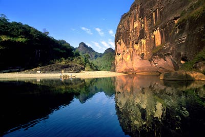

| 雄峰俊岭 | 滔滔大河 | 都市盛景 | 互动 | |||||
|
��九曲溪水流清澈,水源充沛,水质达国家地面水Ι类标准,九曲溪从西向东,蜿蜒自如,山绕水转,水贯山行,溪水晶莹,可谓曲曲含异趣,湾湾藏佳景。清澈的溪水是武夷山的灵魂,乘上古朴的竹筏荡入山光水色之中,如融入神话般的境界,令人心旷神怡,游人可领略到探奇之美,心境之和,漂流之趣。乘筏游览九曲溪是武夷山的精品旅游项目,也是武夷山风景区最具特色的旅游项目,因而有了到武夷山旅游"不坐竹排（竹筏）,等于白来"之说。九曲上游的星村有一、二号、仙凡界3个竹筏码头,距度假区6公里,距市区20公里。游客可乘公交车或出租车到星村乘坐竹筏,至一曲武夷宫码头上岸,从九曲顺水漂流而下,游程约90分钟。九曲溪发源于森林茂密的武夷山自然保护区,全长62.8公里。进入风景区的一段河流除受河流自然弯曲的作用之外,还受多组岩层断裂方向控制,形成深切河曲,使9.5公里长的河流,直线距离仅5公里,曲率达1.9。九曲溪水流清澈,水源充沛,水质达国家地面水Ι类标准,九曲溪从西向东,蜿蜒自如,山绕水转,水贯山行,溪水晶莹,可谓曲曲含异趣,湾湾藏佳景。清澈的溪水是武夷山的灵魂,乘上古朴的竹筏荡入山光水色之中,如融入神话般的境界,令人心旷神怡,游人可领略到探奇之美,心境之和,漂流之趣。  ����山与水的完美结合是九曲溪旅游线路最突出的特色。曲折萦回的九曲溪贯穿于丹崖群峰之间,如玉带串珍珠,将36峰,99岩连为一体,构成"一溪贯群山,两岸列仙岫"的独特自然美景。由于水绕山行,山临水立,仰角适中,滩潭交错,山不高有高山之气魄,水不深集水景之大成,身临其间,有如漫步奇幻百出的山水画廊,钱其琛副总理游览武夷山后感慨万千欣然留下"三峡雄伟壁立,漓江清碧秀丽,武夷山水,两者皆备,尽在其中"的赞叹。游览九曲溪的水上工具是古朴的竹筏。坐筏观山,极目皆图画,丹山、碧水、绿树、蓝天、白云相映成趣,呈现出武夷山大自然五彩缤纷的色彩美。沿途看到奇峰相叠、嵌空而立,那高低相错的山峦,如旌旗招展,那气势磅礴的岩峰,如万马奔腾。展示了大自然中极富韵味的参差美。武夷山以竹筏为游览交通工具已有1000多年的历史。由于它浮力大,吃水浅,轻便灵活,筏工只要用一根竹篙驾驭。它可以平稳地漂过深潭,也可飞快地滑下浅滩；可以灵巧地避开突立中流的礁石,又可急剧地转弯。人坐筏上无遮无拦,全方位地沉浸在碧水丹山之中,无噪音、无污染,抬头可见山景,俯首可观水色,侧耳能听溪声,伸手能触清波,动中有静,静中有动,刚柔相济。可以说是竹筏水中流,人在画中游,"看山不用杖而用舟",即使是白发翁妪,仍可尽情漫游,遍览山水之美。 |
||||